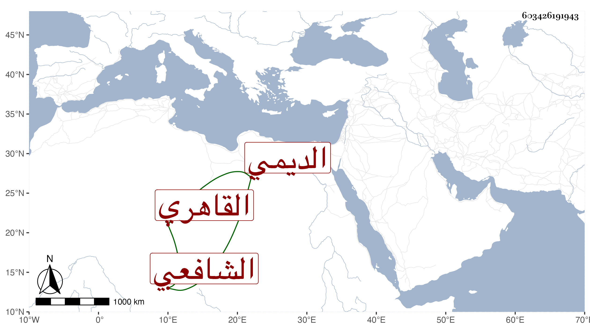

0902Sakhawi.DawLamic.ITO20230111-ara1.EIS1600.603426191943
Biography ID: 603426191943
349
محمد بن عثمان بن محمد بن عثمان صلاح الدين بن الفخر الديمي الأصل القاهري الشافعي سبط أحمد بن عبد الواحد البهوتي الماضي وأبوه . ولد تقريبا سنة خمس وسبعين وثمانمائة وحفظ القرآن والعمدة والمناجين والألفيتين والشاطبيتين ، وعرض علي في جملة الجماعة وتولع بطريقة والده ولازمه فيها ، وخالقه في سكونه وعدم تعرضه للفضلاء مع فطنة وذكاء ولازمني في أشياء منها شرحي للألفية بحيث قرأ علي نحو النصف منه وكذا كان يقرأ علي أشياء مما يتوجه لجمعه كتعليق على التذكرة لابن الملقن وأجل شيوخه في الفقه الشمس البامي وكذا قرأ على الكمال بن أبي شريف وأخيه قليلا وابن قاسم وحسن الأعرج والسنتاوي وفي الفرائض والحساب على البدر المارداني ، وتميز قليلا مع نوع وسواس وخفة ، وحج مع أمه في سنة خمس وتسعين .
